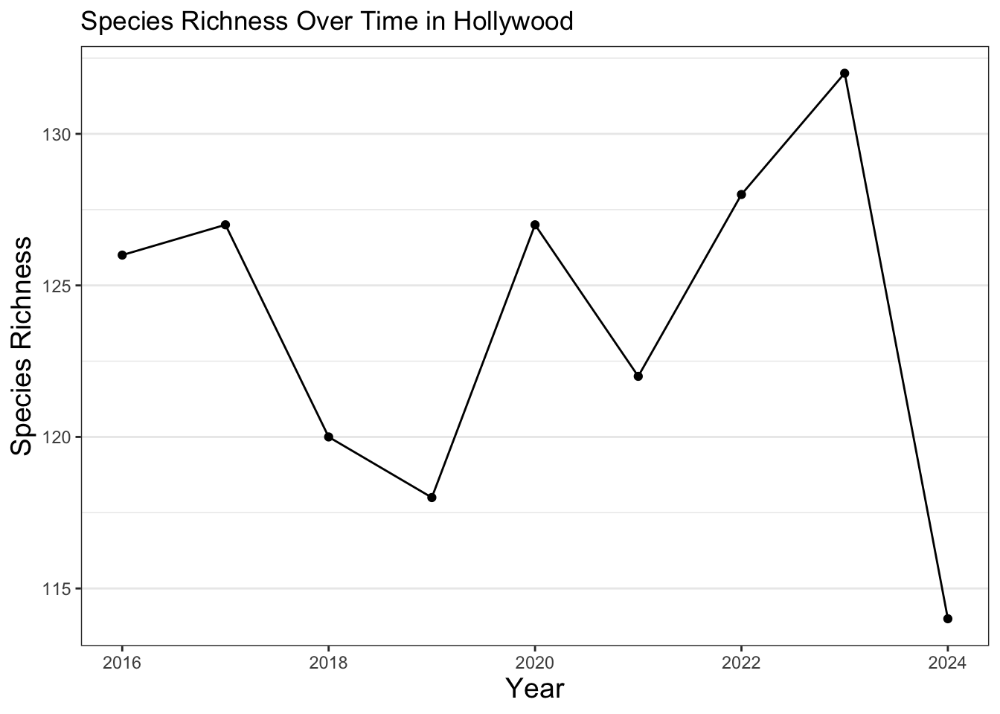

library(readr)
library(dplyr)
library(here)
library(sf)
library(mapview)
library(lubridate)
library(ggplot2)Normalizing iNaturalist data
There is a bug with sf https://github.com/r-spatial/sf/issues/1762. This bit of code is fix for the bug.
sf_use_s2(FALSE)Spherical geometry (s2) switched offWhile community science data is extremely useful and allows you to answer many crucial questions within urban ecology, it has its limitations. One of the major limitations to community science data is that because it relies on public observations instead of consistent, standardized surveying, the data ends up being biased. This means that certain areas end up having more observations than others, and the number of observations changes over time. Certain species are also more likely to get detected, such as charismatic and abundant species, while others are harder to track. There are multiple ways to account for this bias, which is referred to as data normalization.
Say you want to track species diversity over time in your neighborhood. Species diversity is one indicator of overall biodiversity health. With more diversity in the species found, the urban ecosystem of your neighborhood tends to be more resilient and stable. How do we measure this using community science data?
Get CNC data
First, let’s import City Nature Challenge observations over 9 years (2016-2024) within the County of Los Angeles.
allobs <- read_csv(here("data/cleaned/cnc-los-angeles-observations.csv"))Rows: 191638 Columns: 37
── Column specification ────────────────────────────────────────────────────────
Delimiter: ","
chr (26): time_observed_at, user_login, user_name, created_at, updated_at, ...
dbl (7): id, user_id, latitude, longitude, positional_accuracy, public_pos...
lgl (3): captive_cultivated, coordinates_obscured, threatened
date (1): observed_on
ℹ Use `spec()` to retrieve the full column specification for this data.
ℹ Specify the column types or set `show_col_types = FALSE` to quiet this message.Next, we want to restrict our dataset to only research grade observations. These are observations that have been identified twice and are of the highest quality. Here, we select that we only want the quality_grade variable to equal “research”.
allobs_research <- allobs %>%
filter(quality_grade=="research")We then want to convert this data into points that we can use for geospatial analysis.
allobs_sf <- allobs_research %>%
st_as_sf(coords = c("longitude", "latitude"), crs = 4326)Get observations for a region
Say you live in Hollywood. We will want to clip these observations to the boundary of your neighborhood, so the only observations we have are those found within your neighborhood. First, we’ll import the boundary for the neighborhood:
hollywood_boundary <- read_sf(here('data/raw/Hollywood Boundary/hollywood_boundary.shp'))We now want to check that the coordinate reference systems (CRS) are the same between our observations and our neighborhood boundary
st_crs(hollywood_boundary) == st_crs(allobs_sf)[1] FALSEWe get a result of “FALSE”. As such, let’s make the CRS the same between the two:
hollywood_boundary <- st_transform(hollywood_boundary, crs = st_crs(allobs_sf))
st_crs(hollywood_boundary) == st_crs(allobs_sf)[1] TRUELet’s now filter the observations to those that are only within the Hollywood boundary.
neighborhood_obs <- allobs_sf[lengths(st_intersects(allobs_sf, hollywood_boundary)) > 0, ]although coordinates are longitude/latitude, st_intersects assumes that they
are planar
although coordinates are longitude/latitude, st_intersects assumes that they
are planarWe can now visualize the observations within a map:
mapview(neighborhood_obs) +
mapview(hollywood_boundary)As you can see, most of the observations take place in the large natural area of Griffith Park in the top right of the neighborhood. Observations being found more in one location compared to another is a frequently seen form of bias.
Calculate species diversity
We now need to determine how we calculate species diversity. There are multiple ways to do this, but because of the bias in community science data, we need to be careful on how to best do so. We want to maximize the likelihood that a species, if it is present in your neighborhood, is observed. To do this, we can do what is referred to as “thinning” the data, which is where we cap the maximum number of observations of a species. Instead of keeping every single observation, we can instead look for if a species has been observed at least once over an entire year. If it is observed at least once, we can count the species as present. Using this presence data, we can calculate species richness, which is the total number of unique species that are found within an area. Calculating species richness is a way to account for bias in community science observations through thinning the data.
Additionally, because the number of observations changes over time, we need to account for this variation. One way to do this is to take a subset or a smaller portion of the observations for each year, so that each year has the same number of observations when calculating species richness.
First, we need to create a column in our dataset that says the year using mutate() and year().
neighborhood_obs <- neighborhood_obs %>%
mutate(year = year(observed_on))Next, we need to determine the year that has the lowest number of observations. We can do this by calculating the number of observations for each year.
table(neighborhood_obs$year)
2016 2017 2018 2019 2020 2021 2022 2023 2024
401 238 838 1065 388 501 652 547 386 Let’s now calculate the minimum of these observations.
lowest_year <- min(table(neighborhood_obs$year))
lowest_year[1] 238Then when calculating species richness for each year, we can use a random subset in order to account for this bias, making it so we have lowest_year number of observations for each year.
We use group_by() to group the observations by year, and slice_sample() to randomly pick lowest_year number of observations per year. It’s also crucial that we set replace to FALSE. This ensures that we don’t duplicate observations.
random_obs_per_year <- neighborhood_obs %>%
st_drop_geometry() %>%
group_by(year) %>%
slice_sample(n = lowest_year, replace=FALSE) %>%
select(year, scientific_name)
head(random_obs_per_year)# A tibble: 6 × 2
# Groups: year [1]
year scientific_name
<dbl> <chr>
1 2016 Malva parviflora
2 2016 Ribes speciosum
3 2016 Columba livia domestica
4 2016 Cenchrus setaceus
5 2016 Hazardia squarrosa
6 2016 Dudleya lanceolata We can use table to confirm we get lowest_year number of observations per year.
table(random_obs_per_year$year)
2016 2017 2018 2019 2020 2021 2022 2023 2024
238 238 238 238 238 238 238 238 238 Now that we have our subsets, we need to thin the data so that each species only has one observation maximum per year. We can do this with the distinct() function.
unique_species_per_year <- distinct(random_obs_per_year) We use count() to count the number of species per year.
richness_dataframe <- unique_species_per_year %>%
count(year, name='richness')
richness_dataframe# A tibble: 9 × 2
# Groups: year [9]
year richness
<dbl> <int>
1 2016 125
2 2017 127
3 2018 129
4 2019 124
5 2020 127
6 2021 132
7 2022 139
8 2023 133
9 2024 116Next, we can create a chart and visualize the results. Here, we use commands for how the plot looks similar to other plots we’ve created previously.
ggplot(data = richness_dataframe, mapping = aes(x=year, y=richness)) +
geom_line() +
geom_point() +
theme_bw() +
theme(axis.title = element_text(size =14),
panel.grid.major.x = element_blank(),
panel.grid.minor.x = element_blank()) +
labs(title = "Species Richness Over Time in Hollywood",
x = "Year",
y = "Species Richness")
As you can see for this neighborhood, species richness has varied over time. Most of this variation is likely explained by needing more observations to better ensure that if a species is present, it can be detected. This can be done through expanding the data used to all iNaturalist observations beyond the City Nature Challenge and to continue participating in community science efforts. Additionally, there are many other indicators of ecosystem health. For example, an increase in species richness may be due to the introduction of new invasive species. Random chance when we created the subsets could also potentially skew our results, so species richness can also be measured in other, more complex ways. In order to get a better overall picture, other metrics can be explored as well. It’s also generally a good idea to look over a longer time period in order to detect trends in urban ecology, although we kept it to 9 years for this exercise. Additionally, the code can be further streamlined with the use of other coding skills, like loops. We encourage you to continue to practice and learn more about urban ecology and coding to answer some of these questions!
Exercise 1
Utilize the above code to visualize how species richness changes over time in an area of your choosing. Choose the area and follow the steps above to normalize the data and create your own line plot showing species richness over time.